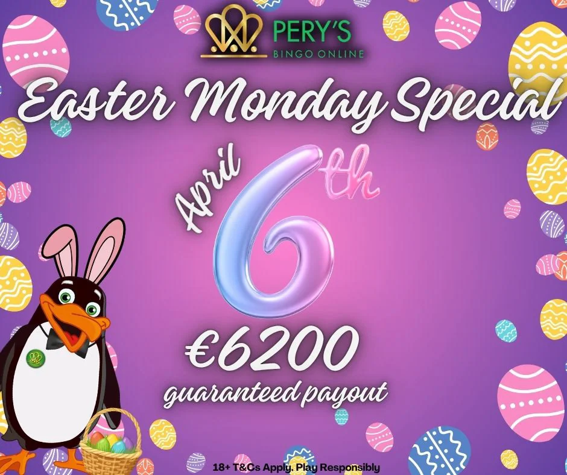
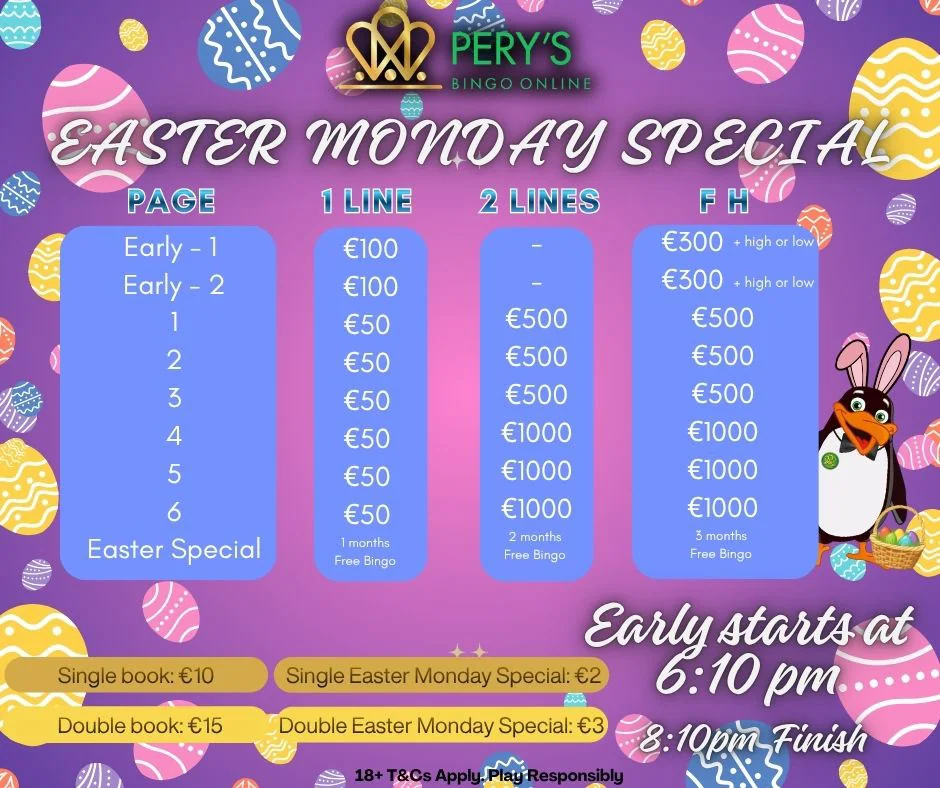
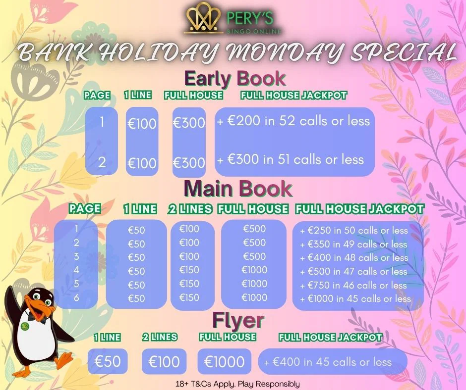
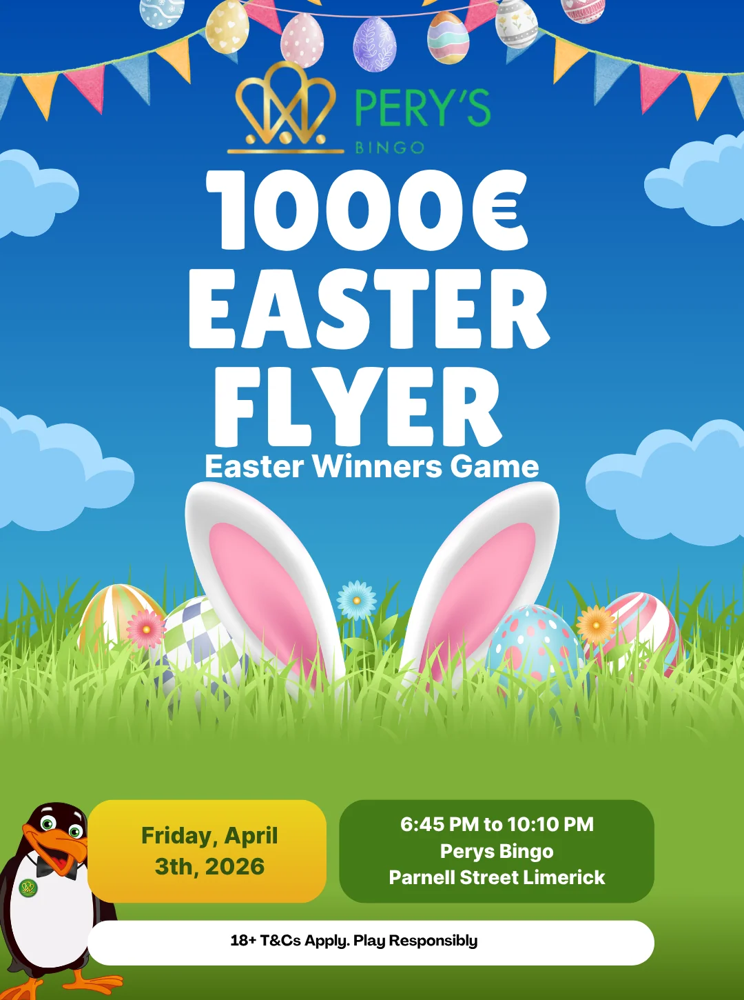
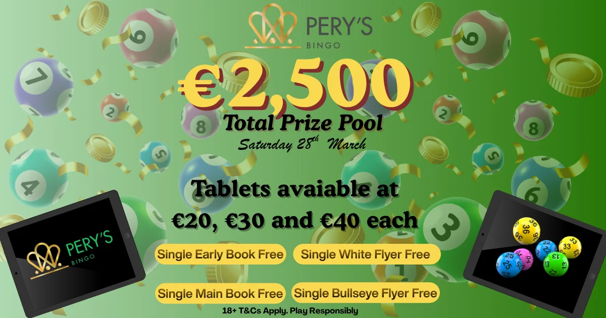

Placement project · Campaign & social design
Pery’s Bingo
Event posters, social campaigns and a weekly schedule from my placement at Parnell Plaza.

Project brief
During my six-week placement at Parnell Plaza in Limerick, I designed graphics for Pery’s Bingo events in the hall and online. Each piece needed to communicate dates, times and offers at a glance.
My role
Designer (student)
Process & sketches
I learned Canva alongside my existing Adobe skills and used Facebook and website analytics to understand what regular players responded to. I proposed bringing the weekly events together on one poster.
Design decisions
Each day has a name, colour and calendar icon. For seasonal campaigns, I paired a simple announcement with a separate information graphic, keeping the type, illustration and palette consistent across both.
Outcome
The weekly schedule was used in the hall and on social media. It became the standard format for communicating the venue’s 2026 weekly programme.
Design details










